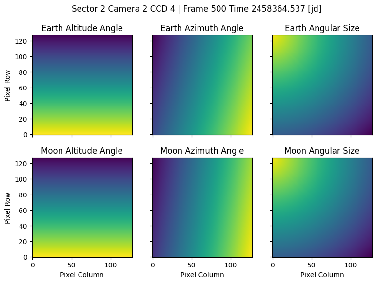

TESS Back ML
TL,DR
This is a Python package to create specialized support data from the TESS Full Frame Image (FFI).
With tess-backml you can isolate the scatter light (SL) contribution to FFIs and create downsize versions of the cubes for multiple uses:
- One use is to correct the SL signal in any FFI cutout by interpolating from a downsize version of the
cube.
- Another use is to create a machine learning training set with the SL cube and pixel maps of how the
Earth and Moon angles change during sector observations. These two are the main contributions to the background signal.
- This package, also will enable ML model evaluation to correct the scatter light on the fly.
Install
Install from this GitHub repository with
PyPI will available shortly.
Scatter Light Cube
This animation shows the scattered light of a TESS FFI. The original 2048 x 2048 pixel image was downsized to 128 x 128 pixels.

Angle Maps
The next figure shows the vector maps (distance, elevation, and azimuth angles) for Earth and Moon with respect to the camera boresight. These maps have the same shape as the scatter light cube shown above.

Usage
Create a SL Cube
From the original FFI cube size (~1200 times, 2k, 2k), we can extract and compute a downsize version of the SL by doing pixel binning and time binning. The resulting SL cube has typically shape (~300, 256, 256).
from tess_backml import BackgroundCube
bkg_data = BackgroundCube(
sector=2, camera=1, ccd=1, img_bin=8, downsize="binning"
)
bkg_data.get_scatter_light_cube(frames=None, mask_straps=True, plot=True, rolling=True, errors=True)
bkg_data.bin_time_axis(bin_size=2.0)
fname = f"./data/ffi_sl_cube_sector{sector:03}_{camera}-{ccd}.fits"
_ = bkg_data.save_to_fits(out_file=fname, binned=True)
Correct SL in TPF
Once we have a FITS file with the SL cube, we can use the corrector object to interpolate to the desired pixels and times, and correct the background SL.
import numpy as np
import lightkurve as lk
from tesscube import TESSCube
from tess_backml.corrector import ScatterLightCorrector
tcube = TESSCube(sector=2, camera=1, ccd=1)
# this is pseudo code
tpf = tcube.get_tpf(<TIC coords>, shape=(25, 25))
# Corrector object
slcorr = ScatterLightCorrector(sector=2, camera=1, ccd=1, fname=fname)
# pixel array for evaluation
row_eval = np.arange(tpf.row, tpf.row + tpf.shape[1])
col_eval = np.arange(tpf.column, tpf.column + tpf.shape[2])
# time array for evaluation
time_eval = tpf.time.value + slcorr.btjd0
# evaluate the SL model at given pixel/times
sl_eval = slcorr.evaluate_scatterlight_model(
row_eval=row_eval, col_eval=col_eval, times=time_eval
)
# subtract the SL model
flux_corr = tpf.flux - sl_eval * tpf.flux.unit
For more details see the Corrector Tutorial.
Create ML Training Set
To get the training data follow the steps:
from tess_backml import Background_Data
# initialize the object for given sector/camera/ccd
# will do 16x16 pixel binning
tess_bkg = BackgroundCube(
sector=1, camera=1, ccd=1, img_bin=16, downsize="binning"
)
# get the flux data from MAST/AWS, compute scatter light and downsize
tess_bkg.get_scatter_light_cube(plot=False)
# compute the vector maps for the Earth and Moon
tess_bkg.get_vector_maps(ang_size=True)
# make an animation of the scatter light cube
tess_bkg.animate_data(data="sl", save=False, step=10);
# save data to disk
tess_bkg.save_to_npz(save_maps=True)
Or you can run a Python script build_dataset.py in the terminal (plotting flag is optional and will add
run time):
usage: build_dataset.py [-h] [--sector SECTOR] [--camera CAMERA] [--ccd CCD] [--downsize DOWNSIZE] [--image-bin IMG_BIN] [--plot]
[--out-dir OUT_DIR]
Build TESS FFI background dataset for a Sector/Camera/CCD.
options:
-h, --help show this help message and exit
--sector SECTOR TESS sector.
--camera CAMERA TESS camera.
--ccd CCD TESS camera.
--downsize DOWNSIZE Method for downsizing the image, one of [sparse, binning].
--image-bin IMG_BIN Image binning size, must divide 2048.
--plot Plot target light curve.
--out-dir OUT_DIR Outputh directory path where files and figures will be saved.
The script will save npz files with the following dictionary:
"scatter_cube": the data cube with the scatter light, shape [nt, 128, 128] depending on the binsize (16)
"time": time array in JD
"cadenceno": cadence number array
"earth_alt": Earth altitude angle from the camera boresight
"earth_az": Earth azimuth angle from the camera boresight
"earth_dist": Earth distance from the camera boresight
"moon_alt": Moon altitude angle from the camera boresight
"moon_az": Moon azimuth angle from the camera boresight
"moon_dist": Moon distance from the camera boresight
"earth_alt_map": Earth altitude angle map for every pixel, same shape as `scatter_cube`
"earth_az_map": Earth azimuth angle map for every pixel
"earth_dist_map": Earth angular size map for every pixel
"moon_alt_map": Moon altitude angle map for every pixel
"moon_az_map": Moon azimuth angle map for every pixel
"moon_dist_map": Moon angular size map for every pixel
For more details see the Data Cubes Tutorial.